Commencer
TapeDesk est une bande quatre pistes avec un moteur sonore, pour iPhone et iPad. Si c’est votre première fois, commencez ici.
Ce qu’il vous faut
Un iPhone ou un iPad sous iOS 17 ou ultérieur. Sur iPhone, l’app s’utilise à la verticale. Sur iPad, vous pouvez la tourner comme vous voulez. Vous enregistrez avec le micro de l’appareil ou avec une interface audio USB. Pas de compte, pas d’inscription.
À la première ouverture, l’app charge une bande d’exemple, demo. Elle a quatre pistes enregistrées à 120 BPM. C’est une bande comme les autres. Vous pouvez la modifier ou la supprimer.
L’app demande trois autorisations. Le micro pour enregistrer, le réseau local pour trouver d’autres apps avec Link et le Bluetooth pour appairer un contrôleur MIDI. Elle ne collecte aucune donnée.
Les deux modes
TapeDesk peut être un enregistreur ou une groovebox. Vous choisissez dans réglages ▸ application ▸ mode.
En enregistreur, vous avez la bande et le mix. En groovebox, le synthé et l’écran piste s’ajoutent, et là vous jouez et enregistrez en même temps. Changer de mode ne change que ce que vous voyez. Vos bandes restent telles quelles.
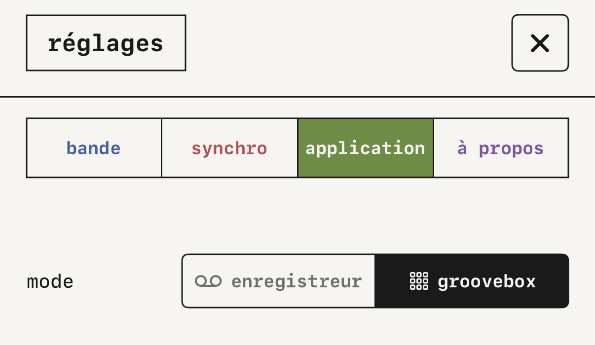
mode dans les réglages de l’application.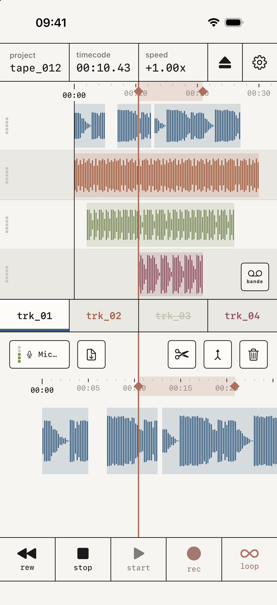
enregistreur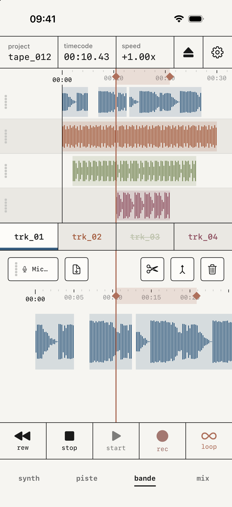
grooveboxL’écran
L’écran de la bande a toujours les mêmes parties. En haut, l’en-tête. En dessous, la bande entière et, plus bas, la piste armée en grand pour l’éditer. Tout en bas, le transport et les écrans.
L’en-tête ouvre d’autres écrans. Touchez project pour voir vos bandes. L’icône d’éjection ouvre l’export, et la roue dentée, les réglages.
La rangée du bas mène aux quatre écrans, synth · piste · bande · mix.
Il n’y a pas de rangée d’écrans. Vous passez de la bande au mix avec le sélecteur du coin, qui porte le métronome au-dessus.
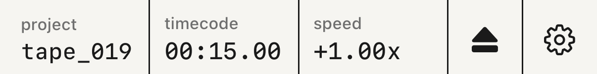
project, timecode et speed.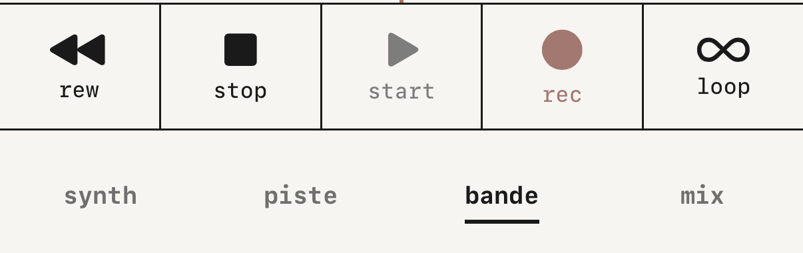
Votre première prise
- Touchez l’onglet d’une piste pour l’armer.
- Appuyez sur
rec. Si la bande est à l’arrêt, un décompte sonne et l’enregistrement commence. - Appuyez sur
stopquand vous avez fini. - Appuyez sur
rewpour revenir au début, puis surstartpour écouter.
Vous avez votre première prise. Le reste, vous en aurez besoin petit à petit.
Enregistrer
Une prise qui démarre toute seule
Maintenez rec et un fader de seuil apparaît, de −60 à 0 dB. L’enregistrement démarre dès que l’entrée le franchit. C’est utile quand vous enregistrez seul et que le téléphone est loin.
rec, un clap, et la prise démarre toute seule.Pistes
Une bande peut avoir de quatre à six pistes. Sur iPhone, elle en a quatre au départ, et six sur iPad. Vous changez ça avec pistes, dans réglages ▸ bande. Chaque piste accepte 128 régions, et la bande dure 10 minutes.
Si, en réduisant le nombre, vous retirez une piste qui contient des prises, l’app vous demande de confirmer en touchant deux fois le même chiffre. En cas d’erreur, annuler apparaît sous pistes et rend la piste entière.
Looper en direct
Avec une boucle active, rec enregistre par-dessus ce qui joue déjà, sans l’effacer. Vous ajoutez une couche à chaque tour. Quand vous appuyez sur stop, tout finit en une seule boucle.
Le seuil marche aussi ici. Maintenez rec et laissez le fader où vous voulez. La couche commence au premier coup. Ce que vous avez joué juste avant de franchir le seuil n’est pas perdu.
Si sources est activé, chaque tour enregistre toutes les pistes de la grille à la fois. La suite est dans plusieurs sources à la fois.
Plusieurs sources à la fois
Vous pouvez enregistrer plusieurs pistes en une seule passe, chacune avec sa source. Une source, c’est le synthé, le micro du téléphone ou chaque canal d’une interface audio. Avec le téléphone seul, vous en avez déjà deux. Vous pouvez chanter sur une piste pendant que le synthé s’enregistre sur une autre.
Touchez le bouton d’entrée pour ouvrir le panneau de monitoring. La ligne source a trois touches, synth · entrée · sources. Appuyez sur sources et la grille source → piste s’ouvre.
Touchez une piste pour la rendre active, puis les sources que vous voulez lui envoyer. Un canal de l’interface peut aller sur plusieurs pistes, et une piste peut recevoir plusieurs canaux. Le synthé ne peut être que sur une piste. Si vous le mettez sur une autre, il change de place. Et chaque piste enregistre soit le synthé, soit l’entrée, jamais les deux ensemble.
À l’enregistrement, toutes les pistes qui ont une source démarrent ensemble. À l’arrêt, chacune garde sa nouvelle région. C’est pareil avec le rec normal, avec la boucle et avec le seuil.
La grille est enregistrée avec la bande. Si vous la rouvrez avec la même entrée branchée, vous la retrouvez comme vous l’avez laissée. Pour revenir à une seule source, touchez synth ou entrée dans le même panneau.
Si vous ne voulez pas qu’une piste enregistre à la prochaine passe, touchez de nouveau son onglet quand elle est déjà armée pour la mettre en safe. Elle montre toujours d’où lui vient le signal, mais n’enregistre pas. C’est le même interrupteur que sur les enregistreurs quatre pistes.
Les canaux d’une interface entrent sans gain ajouté. Le niveau se règle sur l’interface elle-même. Pour enregistrer le synthé et la voix ensemble, prenez un casque filaire. En Bluetooth, ils arrivent en retard et il n’y a aucun moyen de les aligner.
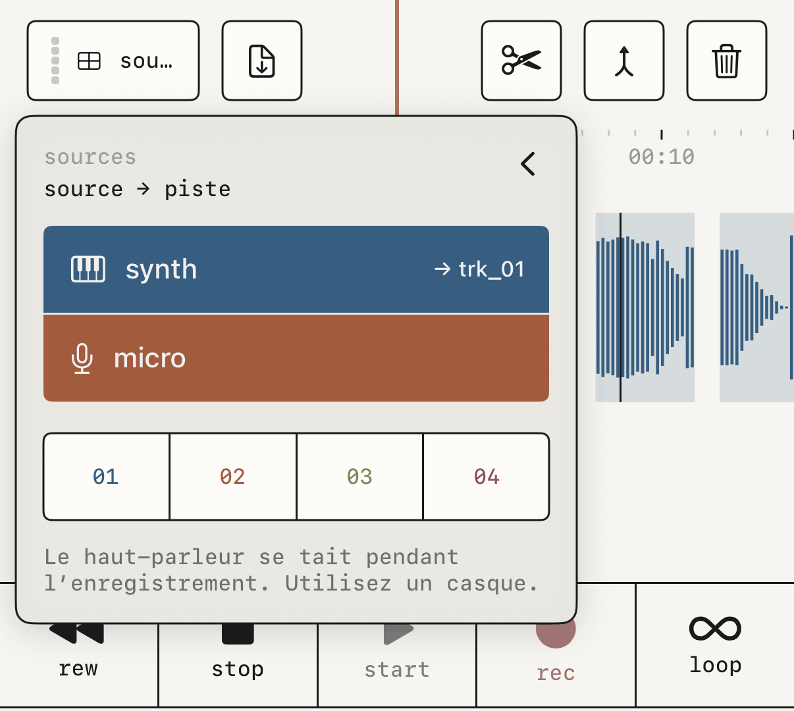
trk_01 et le micro sur trk_02.D’où vient l’audio
C’est iOS qui choisit l’entrée. Il utilise le micro de l’appareil jusqu’à ce que vous branchiez une interface, et à partir de là il enregistre depuis l’interface.
Si vous écoutez en Bluetooth, le monitoring arrive avec environ 200 ms de retard. Pour enregistrer en place, utilisez un câble.
Si vous enregistrez avec le micro du téléphone et que le son sort par le haut-parleur, la sortie se coupe pendant l’enregistrement. Sinon, le micro réenregistrerait ce qui joue déjà. Au casque, tout s’entend normalement.
Si l’app se ferme en pleine prise, elle vous propose de récupérer cet enregistrement à la réouverture. Un appel ou Siri arrêtent le moteur, et la prise en cours est conservée jusqu’à ce point.
Vitesse et boucle
La vitesse de la bande, le scrub et la boucle.
Vitesse
Touchez speed dans l’en-tête et un fader vertical s’ouvre. 1.00x est au centre, 2.00x en haut et 0.25x en bas. La hauteur monte et descend avec la vitesse, comme sur une platine cassette.
Sous le fader, il y a un cadenas. Cadenas ouvert, la vitesse revient d’elle-même à 1x quand vous lâchez. Cadenas fermé, elle reste où vous l’avez laissée et elle est enregistrée avec la bande.
Si vous enregistrez avec la bande à une autre vitesse, la prise garde cette vitesse et sonnera toujours ainsi.
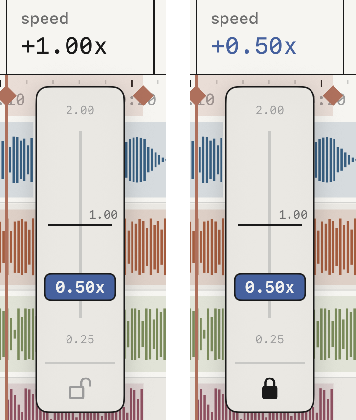
Se déplacer sur la bande
rew revient au début. Si vous maintenez start, rew devient une avance rapide tant que vous le tenez.
Pour aller à un point précis, faites glisser la piste armée du doigt. Bande à l’arrêt, la tête de lecture suit votre doigt, comme un vinyle. Bande en lecture, la vitesse du geste change la hauteur.
Pendant que vous faites glisser, vous sentez la bande sous le doigt. Chaque graduation de la règle donne un petit tap. Les mesures numérotées, les bords des régions de la piste armée et les extrémités de la boucle en donnent un plus franc. Vous pouvez ainsi poser la tête pile sur une coupe presque sans regarder.
Boucle
Faites glisser les poignées de la règle pour marquer le début et la fin de la boucle. Elle peut être aussi longue que la bande entière. La jonction a un court fondu pour qu’on n’entende pas la coupe.
Si une région est sélectionnée, loop dans la barre d’édition cale la boucle sur cette région.
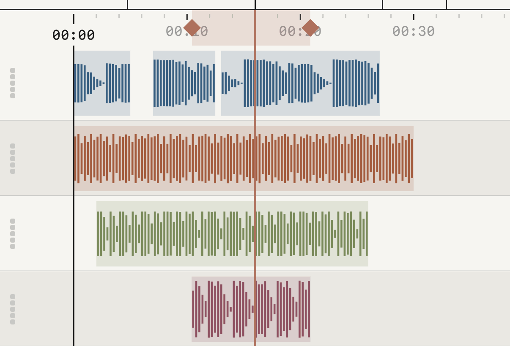
Éditer
Chaque prise enregistrée est une région. Voici ce que vous pouvez faire avec les régions et avec les pistes.
Outils de la piste
Sous les onglets de piste, il y a une rangée d’outils.
- Le bouton d’entrée ouvre le panneau de monitoring.
- L’icône de document importe un fichier audio sur la piste.
- Les ciseaux coupent la région à la tête de lecture.
- La corbeille vide la piste armée d’un seul geste, et
undola rend.
Réunir deux pistes en une
report fusionne deux pistes en une pour vous en libérer une. Avec imprimer, le réglage d’usine, le fader, le pan et les deux envois d’effets de la piste d’origine sont gravés dans l’audio. Ces commandes reviennent ensuite en position neutre, pour ne pas s’appliquer deux fois. Un message vous le confirme.
Synthé groovebox
Le moteur sonore. Il a onze moteurs de synthèse, un sampler et une batterie, et se joue au clavier, en accords ou avec le séquenceur.
Choisir un son
Touchez la case du haut, celle qui affiche le moteur et le preset. Le navigateur s’ouvre, avec les moteurs à gauche et leurs presets à droite.
En haut, il y a trois familles, synth · sampler · au, et l’étoile par son. par son range les sons par instrument et garde vos favoris et vos dossiers.
Touchez un preset et il se charge tout de suite. Le panneau reste ouvert pour que vous puissiez comparer. Un double tap charge et ferme. Si vous alliez perdre des sons samplés non enregistrés, l’app vous le demande d’abord.
enregistrer garde le son tel qu’il sonne comme nouveau preset. Maintenez un de vos presets pour le renommer, le couper ou le supprimer. L’étoile le marque comme favori. Un point à côté du nom vous signale que vous avez modifié le son sans l’enregistrer.
Le son de chaque piste
Si vous ne vous souvenez plus du preset avec lequel vous avez enregistré une piste, la bande, elle, s’en souvient. Chaque fois que vous enregistrez le synthé sur une piste, la bande garde le son qui jouait.
Vous le trouvez dans par son, dans un dossier au nom de la bande. Il contient une ligne par piste, avec son nom. Si vous réenregistrez sur cette piste, son son est remplacé par le nouveau.
Ces sons appartiennent à la bande. Ils n’apparaissent pas dans les autres bandes et disparaissent avec elle. Pour en garder un, chargez-le. Avec enregistrer, il devient un de vos presets comme les autres.
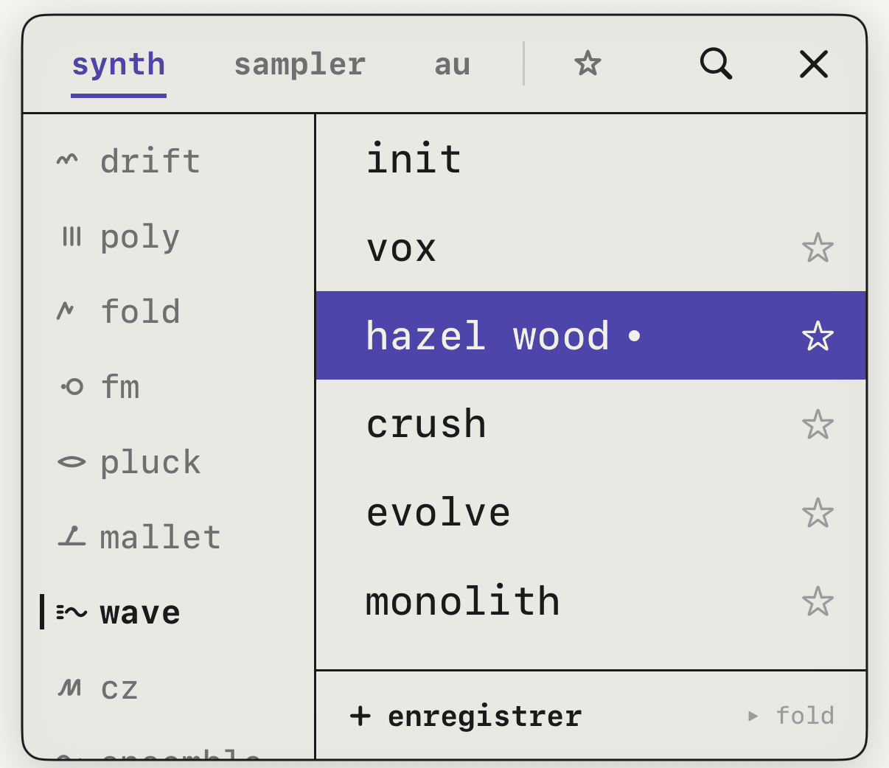
Façonner le son
Sous le nom du son, il y a cinq onglets, chacun avec deux rangées de commandes.
syntha en haut les quatre macros du moteur. En bas,voice(poly·mono·legato),glideetlevel.adsrdessine deux enveloppes, celle du volume et celle du filtre.filterréunit la coupure et la résonance sur une seule courbe, le type de filtre et la part de l’enveloppe qui le module.lfoa deux LFO. Touchezdest, puis la commande que vous voulez moduler. Pour l’enlever, maintenezdest.fxest un effet propre au moteur, à part de ceux du mix.
Les commandes de chaque moteur et de chaque effet sont dans les fiches des moteurs et dans celles des inserts fx.
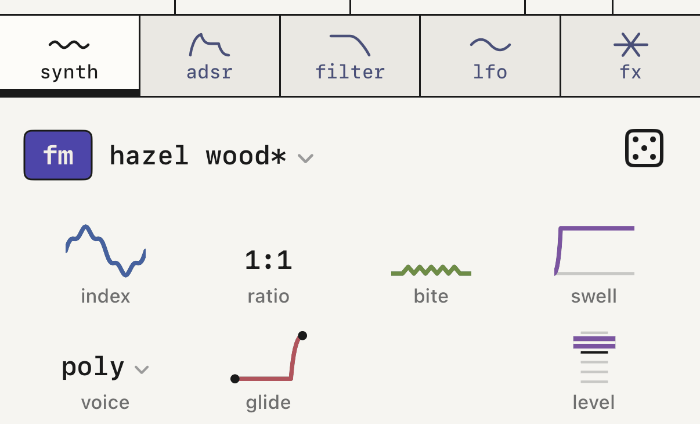
synth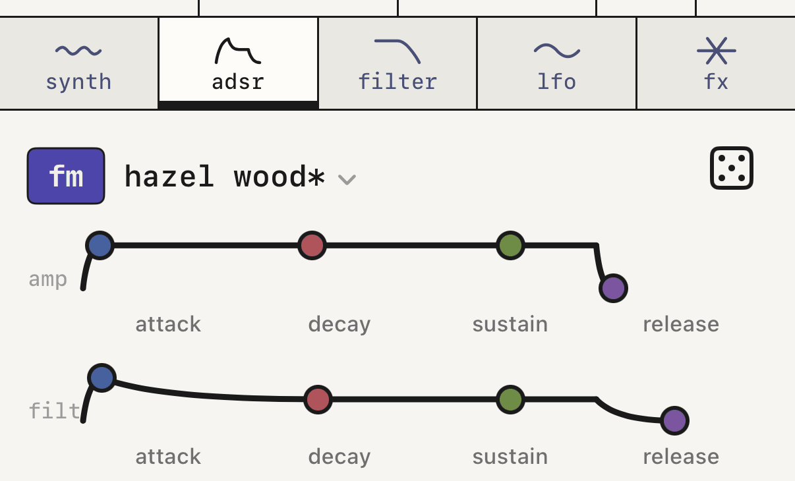
adsr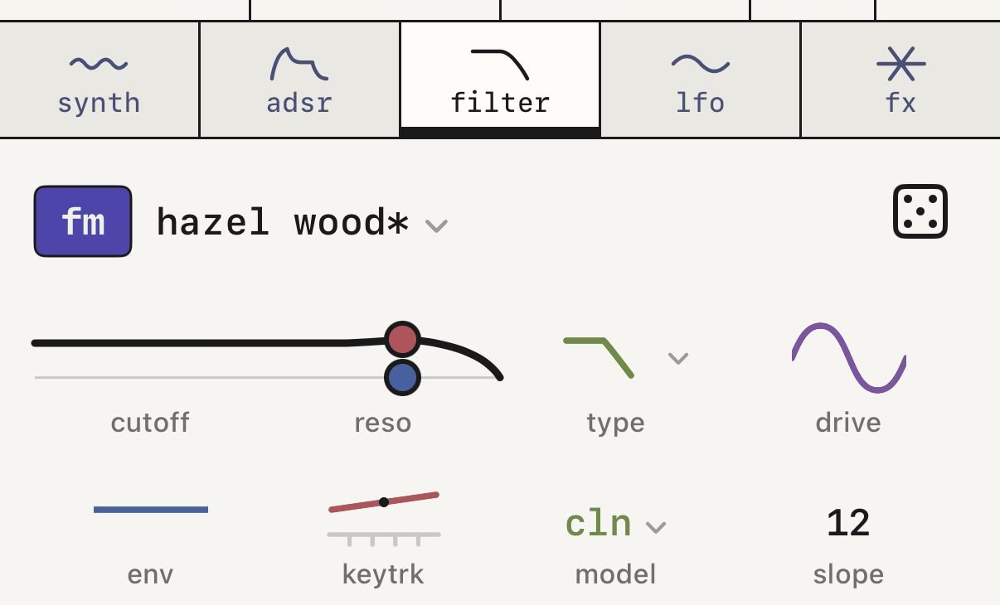
filter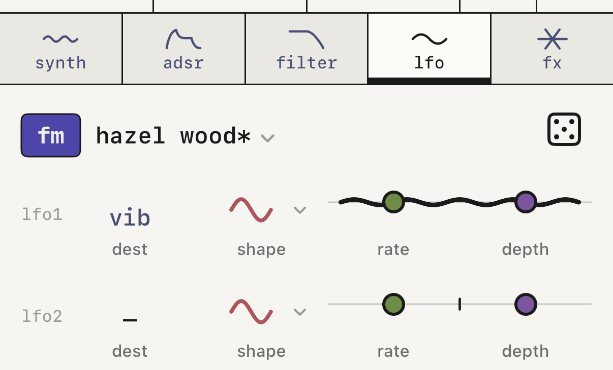
lfoKeys
Le clavier ne joue que les notes de la gamme active. Vous choisissez tonique et gamme juste au-dessus. Il y a 14 gammes d’usine, et vous pouvez créer les vôtres depuis le menu des gammes. − et + changent d’octave.
La force de chaque note vient de l’appui du doigt et du choc que détecte le téléphone. Avec l’Apple Pencil, de la pression. Si vous préférez que toutes sonnent pareil, mettez vélocité à 0 dans les réglages de l’application.
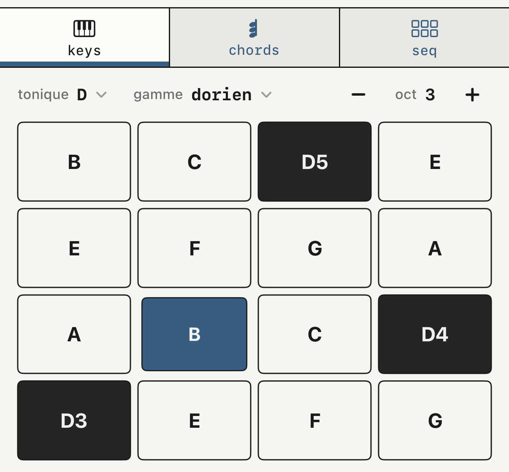
keys, avec la tonique, la gamme et le clavier.Chords
chords place un accord sur chaque pad et a deux modes.
En gamme, il y a huit pads, un par degré de la gamme. Maintenez un modificateur, comme 7, 9 ou sus, et le pad que vous touchez change d’accord. Si vous le touchez et le relâchez sans toucher de pad, il reste enclenché jusqu’à ce que vous le touchiez à nouveau.
Les accords sonnent serrés, les notes groupées au centre du clavier et sans basse. Si vous les voulez plus graves ou plus aigus, changez d’octave avec − et +.
En perso, vous avez deux banques de huit pads et c’est vous qui faites les accords. Touchez édit ou un pad vide et jouez sur le clavier. Chaque note s’ajoute à l’accord, jusqu’à huit. Appuyez ensuite sur enregistrer.
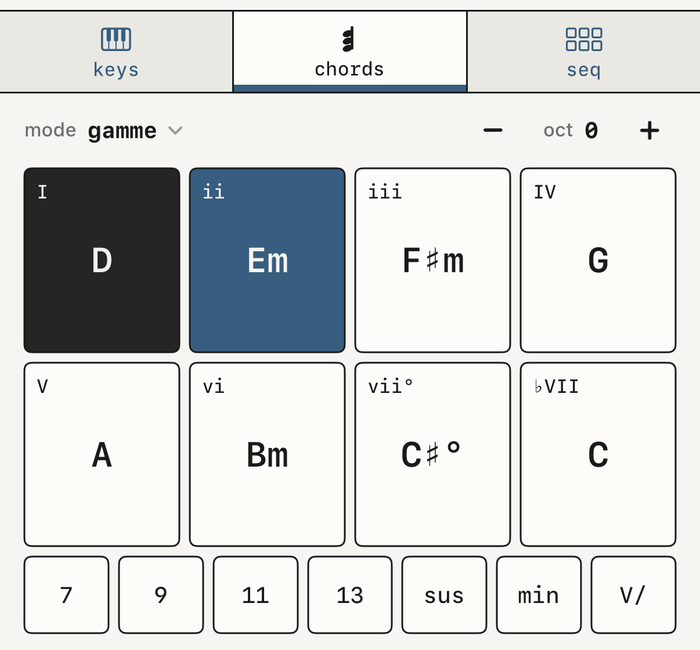
chords en gamme, avec la rangée de modificateurs.Seq
seq a cinq positions, off · arp · step · ping · eucalyptus. Vous choisissez avec le nom en haut à gauche.
arparpège ce que vous maintenez danskeysou danschords, sur un anneau de 16 pas.stepest un séquenceur de 64 pas au plus, en pages de 16. Touchez un pas pour y aller et écrire. Un double tap l’efface.pingest un billard avec des cloches. Un tap pose une cloche, un glissé lance une bille. Chaque cloche qu’une bille traverse sonne. Attention, c’est addictif.eucalyptusest un rouleau de notes qui tourne. Il est expliqué juste en dessous.
Si vous mettez off, ce que vous aviez reste gardé pour votre retour.
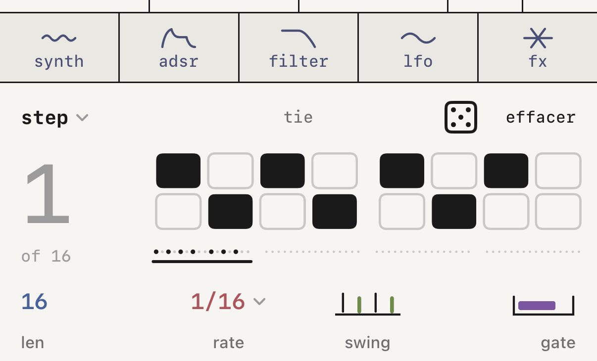
step avec quelques pas écrits.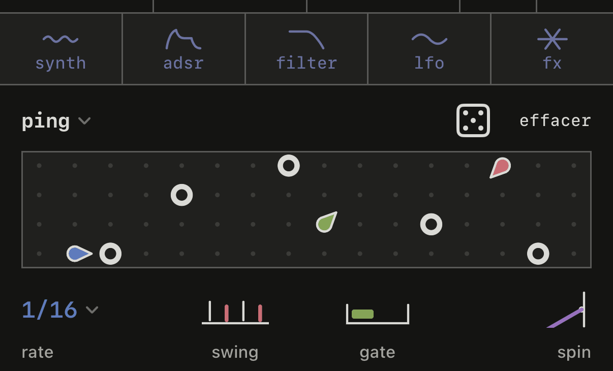
ping avec les billes qui rebondissent entre les cloches.Eucalyptus
eucalyptus est un piano roll en boucle. Vous le remplissez en jouant ou en dessinant des notes, et quand il vous plaît, vous l’imprimez sur la bande.
Sous le rouleau, il y a run · rec · len · imprimer. run le lance. Avec rec activé, ce que vous jouez dans keys, dans chords ou dans kit s’écrit dans le rouleau, et vous pouvez en ajouter à chaque tour. len indique combien de mesures il dure. La mesure est celle de la bande.
Touchez le rouleau pour l’ouvrir en grand. En haut, il y a loop, snap et quant. En bas, pen pour dessiner des notes, vel et prob pour la force et la probabilité de chacune, et undo. Pincez pour zoomer. [] le montre de nouveau en entier.
imprimer enregistre un tour exact du rouleau sur la piste armée. Il commence à la barre de mesure la plus proche de la tête de lecture. Si vous imprimez deux fois de suite, le second passage se cale derrière le premier. La bande doit être à l’arrêt.
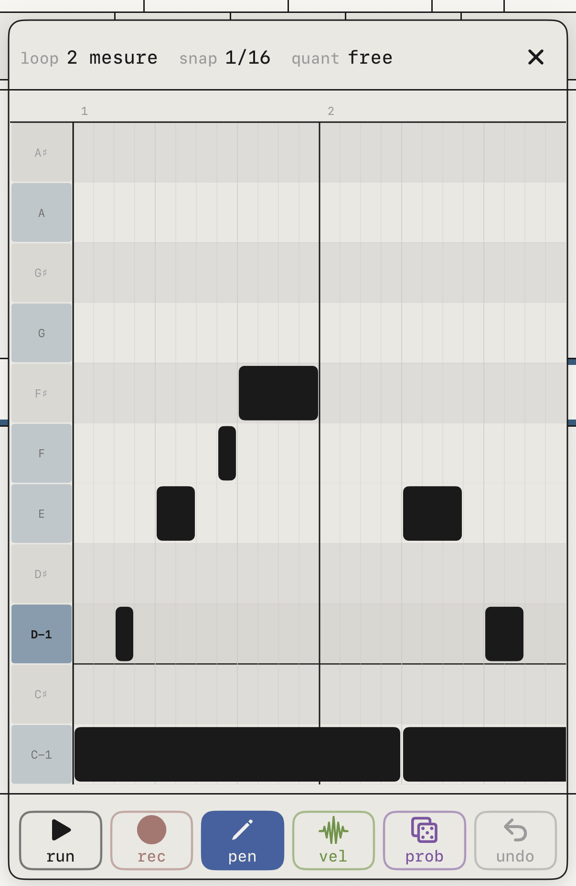
eucalyptus ouvert en grand, avec loop, snap et quant en haut.Kit
kit est la batterie. Il a 24 pads répartis sur deux banques, A et B. Touchez un pad pour le sélectionner, et son son s’ouvre en haut, avec in · gate · norm · rev · cut.
Touchez un pad vide pour charger un son. Il peut venir de votre dossier de sons, de fichiers (audio ou vidéo), du micro ou d’une piste de la bande.
chop découpe un son aux points que vous marquez et répartit les morceaux sur les pads libres. Vous pouvez aussi marquer les coupes en touchant des pads pendant la lecture. norm monte le volume du son jusqu’à sa crête.
Pour vider un pad, ouvrez in et touchez effacer. undo le remet sur le pad. Si vous supprimez un son de la bibliothèque, il disparaît partout, y compris des pads et des presets qui l’utilisent.
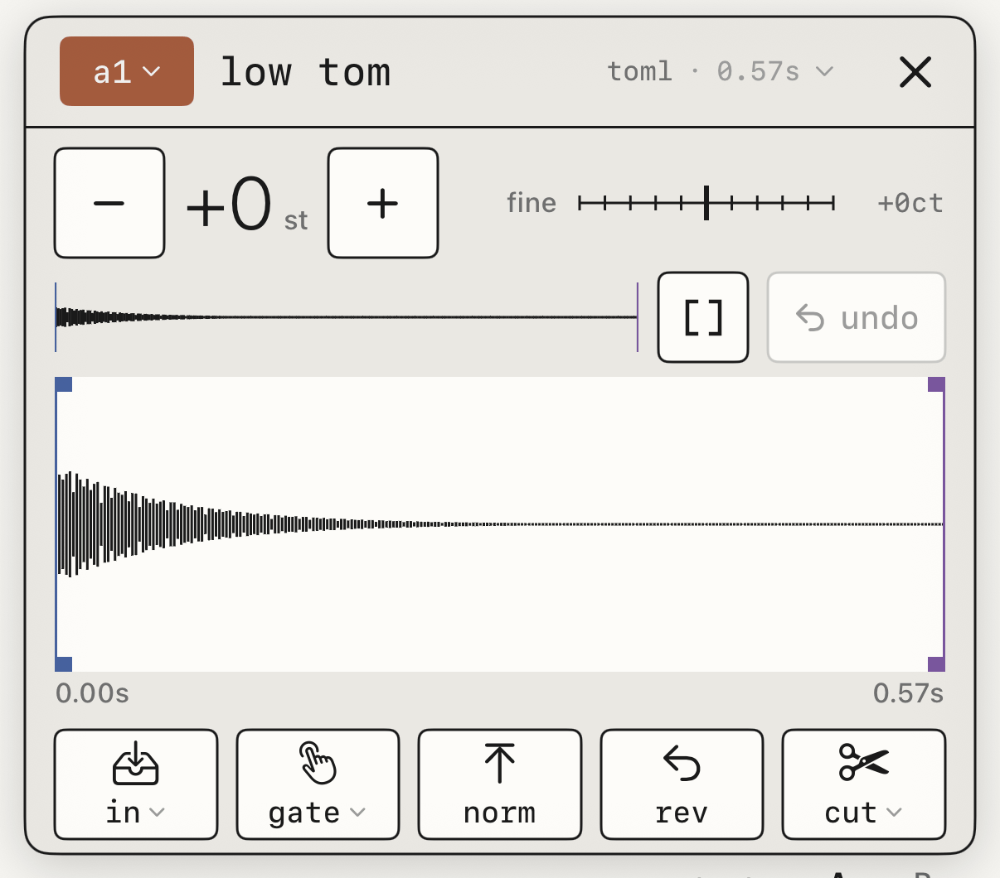
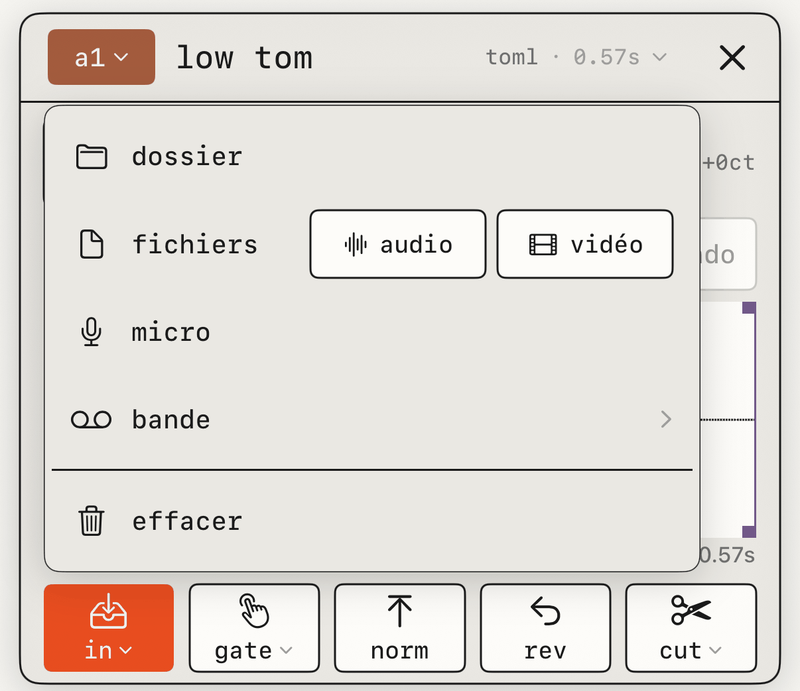
Mixer
Ici, vous équilibrez les pistes et leur ajoutez des effets. Le mix a quatre onglets, fx 1 · fx 2 · mix · eq.
Tranches de console
Dans mix, il y a une tranche par piste, et toutes tiennent à l’écran.
inest le gain d’entrée. Il s’applique à l’enregistrement.panplace la piste à gauche ou à droite.sd1etsd2envoient la piste versfx 1etfx 2.- Le fader a son vumètre, et
mcoupe la piste.
Au-dessus des tranches, il y a drive. Il pousse tout le mix contre le limiteur. Plus vous le montez, plus le son est serré. Il va de −12 à +12 dB.
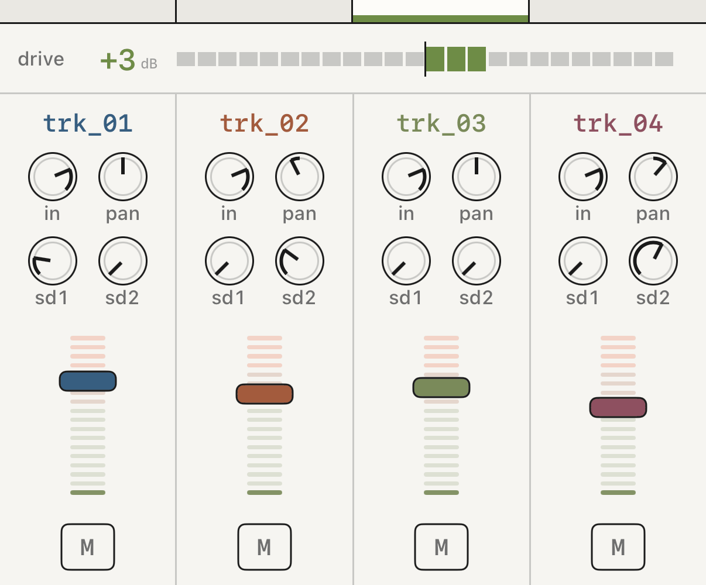
mix, avec drive en haut.Effets
fx 1 et fx 2 sont deux effets partagés. Chaque piste leur envoie ce que vous voulez avec sd1 et sd2. Touchez un bus vide pour choisir parmi tapesat · delay · reverb · crush · haze · wobble · shimmer, ou plugins pour utiliser un AUv3 d’une autre app.
Chaque effet a quatre commandes de 00 à 99. Faites glisser verticalement pour les bouger, et un double tap les ramène à la valeur d’usine. En haut, il y a trois touches.
actifl’éteint sans rien perdre.returnmonte ou baisse son niveau.changerle remplace par un autre.
La plupart des effets s’ajoutent à la piste, qui continue de sonner pareil. crush, haze et wobble fonctionnent autrement. Quand vous montez l’envoi, la piste perd une partie de son son d’origine et, envoi au maximum, vous n’entendez plus que l’effet.
Pendant que vous jouez, vous entendez la piste armée avec ses effets. La prise s’enregistre sans effets, vous pouvez donc les changer ensuite.
Les commandes de chaque effet sont dans les fiches des effets.
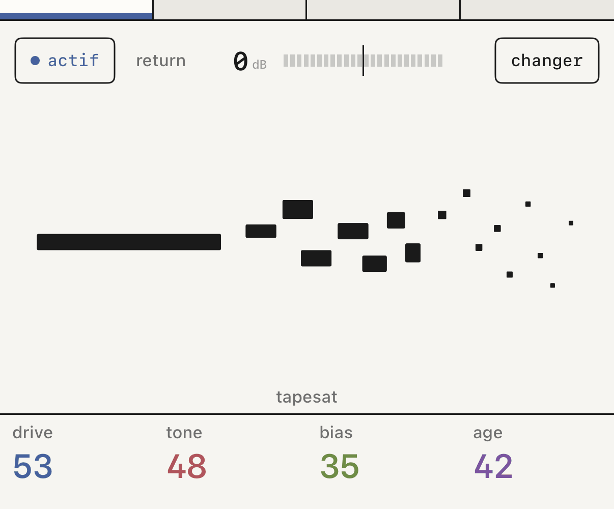
fx 1 avec tapesat et ses quatre commandes.Plugins d’autres apps
Choisissez plugins sur un bus et vous verrez les AUv3 installés, rangés par fabricant. ouvrir l’ui ouvre leur écran. Sur iPad, il s’affiche dans une fenêtre flottante redimensionnable. Le tempo se synchronise tout seul et l’état du plugin est enregistré avec la bande.
EQ master
eq est une courbe plein écran avec quatre bandes fixes, low 150 Hz · body 400 Hz · pres 2.5 kHz · air 8 kHz. Faites glisser verticalement sur une bande pour la monter ou la baisser, jusqu’à 8 dB. Un double tap la remet à plat.
Pincez à deux doigts pour mettre les quatre bandes à l’échelle en même temps. Une puce coupe tout l’eq sans perdre la courbe.
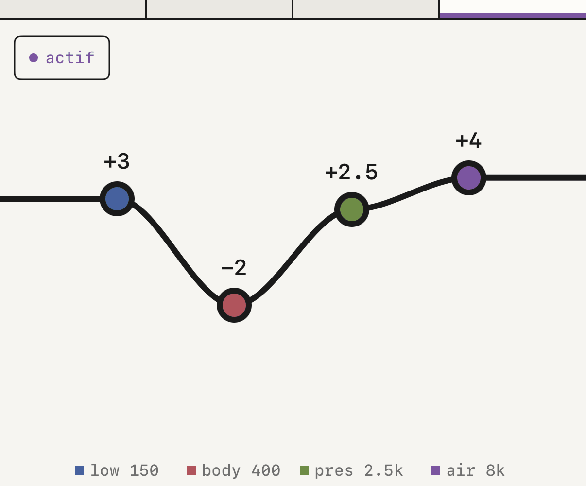
Le trajet du son
Chaque piste passe par sa tranche et par ses envois. Ensuite, tout se rejoint et passe par drive, par l’eq et par le limiteur avant de sortir.
Ce que vous montez dans l’eq pousse aussi contre le limiteur. Les pistes séparées d’un export gardent le drive et l’eq, mais ne passent pas par le limiteur.
Bandes et export
Chaque projet est une bande, avec ses pistes et son mix. Quand elle est prête, vous la sortez en fichier.
Vos bandes
Touchez project dans l’en-tête pour ouvrir bandes. De là, vous créez une nouvelle bande, et sur la ligne de chacune, vous la dupliquez, la renommez ou la supprimez. La suppression demande confirmation et elle est définitive.
Chaque bande garde ses pistes, le tempo, la mesure, la boucle, les effets et le mix. Une nouvelle bande démarre à 120 BPM, avec le nombre de pistes réglé dans pistes des réglages.
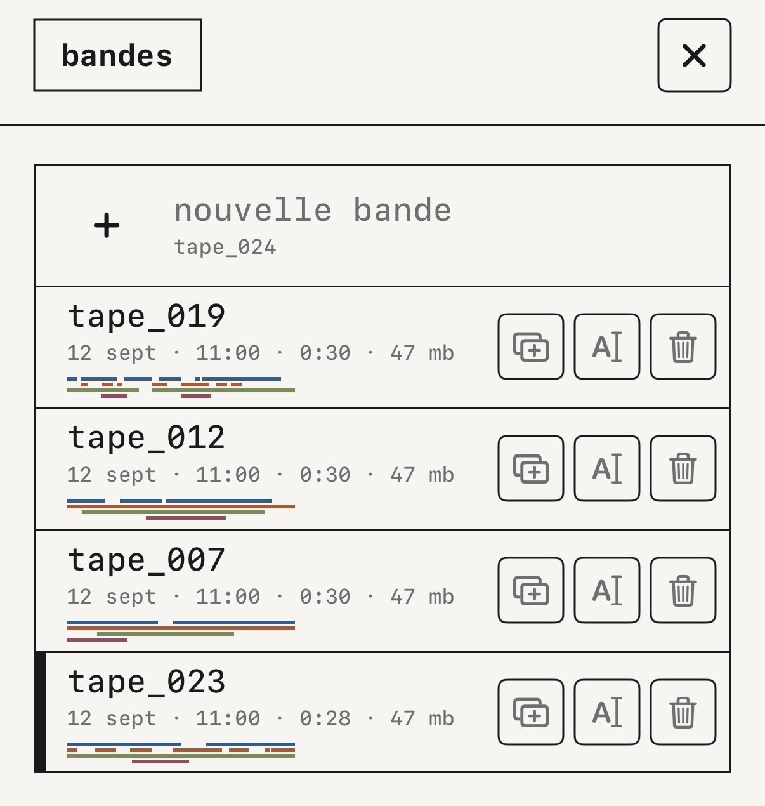
Exporter
Touchez l’icône d’éjection dans l’en-tête. Le panneau propose trois choix.
sortiechoisit entremaster, le mix complet, etpistes, un fichier par piste.formatchoisit entrewav(24 bits, sans perte) etm4a(compressé).plagechoisit entre labandeentière et un cycle de votreloop.
Appuyez sur éjecter et le fichier part par la feuille de partage d’iOS, vers Fichiers, AirDrop ou une autre app.
L’export sonne comme la lecture. En master, les pistes coupées ne sonnent pas et le limiteur s’applique. En pistes, chaque fichier contient son audio complet, même si la piste est coupée.
Si la bande finit sur une queue de reverb ou de delay, jusqu’à 12 secondes de plus sont exportées. En loop, jusqu’à 2 secondes de cette queue sont repliées sur le début, pour que le cycle se referme sans saut.
Le synthé ne sort dans l’export que si vous l’avez enregistré sur une piste. C’est expliqué dans enregistrer le synthé.
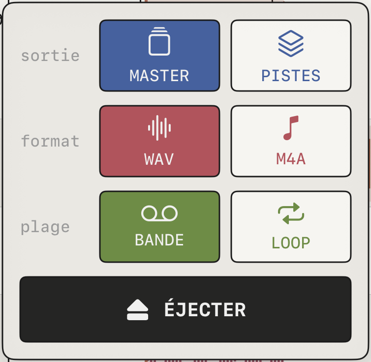
éjecter.Avec d’autres apps
Comment relier TapeDesk à d’autres apps et à des appareils MIDI.
Synchroniser le tempo
Dans réglages ▸ synchro, il y a deux façons de partager le tempo.
horloge midi envoie votre tempo avec sortie ou suit celui d’un autre appareil avec entrée, départ et arrêt compris. Ça marche en USB, en Bluetooth et en réseau.
link ouvre le panneau Ableton Link pour jouer en rythme avec d’autres apps de votre réseau. Quand link est activé, horloge midi s’éteint et reste bloqué.
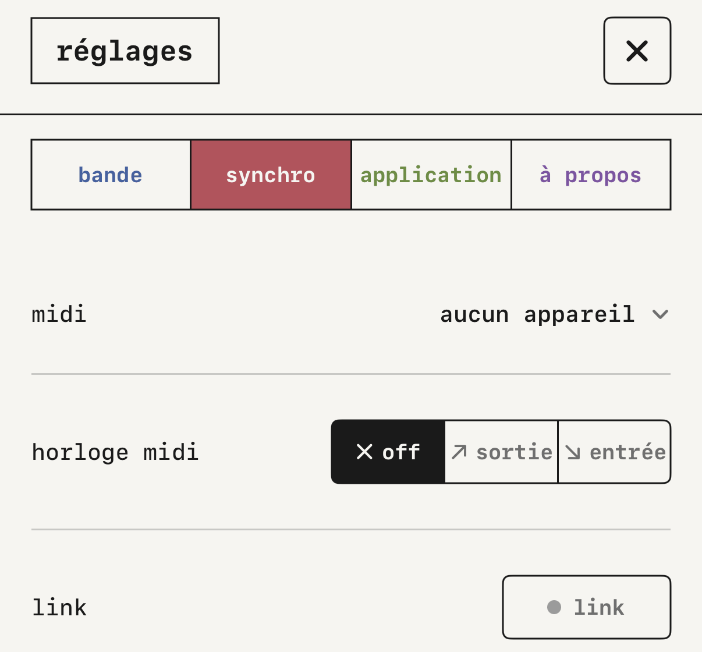
horloge midi et link dans les réglages de synchro.Jouer avec un clavier MIDI groovebox
Branchez un clavier MIDI en USB, en Bluetooth ou en réseau, et il joue le synthé. Par défaut, il écoute tous les canaux. Dans réglages ▸ synchro ▸ midi, vous pouvez choisir l’appareil et le canal. Le sustain et le pitch bend sont pris en compte.
TapeDesk apparaît aussi comme port MIDI pour les autres apps du même appareil, comme AUM ou Drambo.
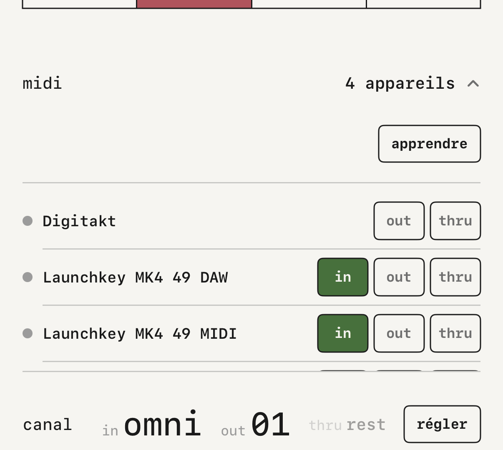
MIDI learn
Avec apprendre, vous assignez un bouton de votre contrôleur à presque n’importe quelle commande de l’app. Le transport, les faders, le pan, les envois, le mute, les commandes des effets et les bandes de l’eq.
Activez-le dans réglages ▸ synchro ▸ midi. Chaque commande assignable affiche une étiquette set. Touchez l’étiquette et bougez le bouton physique. C’est assigné. Appuyez sur ok pour sortir.
Vous pouvez aussi assigner les macros du synthé et le passage d’un preset à l’autre.
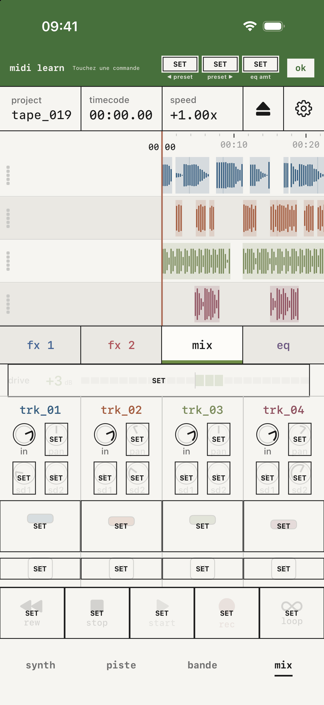
apprendre activé, avec les étiquettes sur le mix.TapeDesk en plugin
TapeDesk s’ouvre aussi en plugin AUv3 dans une autre app. TapeDesk: Tape est la bande avec son mix, et ses bandes sont les mêmes que celles de l’app.
En haut, il y a horloge, avec deux options.
hostest celle d’usine. Vous appuyez surarmeret le play du host lance l’enregistrement. Le tempo vient du host.bandevous donne le transport complet et votre propre tempo.
En host, vous pouvez aussi déplacer la bande. Faites-la glisser où vous voulez et lâchez-la. À partir de là, elle continue de démarrer et de s’arrêter avec le host. C’est pratique avec les hosts à clips, qui n’ont pas de timeline et ne reviennent jamais à zéro. Si vous passez sur bande puis revenez sur host, la bande se recale sur le host.
Avec sources, le plugin reçoit jusqu’à six entrées du host, chacune sur la piste que vous lui indiquez. Il les enregistre toutes à la fois, y compris dans la boucle et avec le seuil. direct fait entendre l’entrée du host dans la sortie. Le host peut automatiser tout le mix.
TapeDesk: Tape dans un host.TapeDesk: Play groovebox
TapeDesk: Play est le synthé en instrument dans une autre app. Il reçoit les notes, le sustain et le pitch bend du host, et propose 37 paramètres à automatiser.
Le son est enregistré avec la session du host. Les presets, les gammes et les cartouches DX sont les mêmes que dans l’app.
TapeDesk: Play dans un host, avec le clavier ouvert.Fiches
Les commandes de chaque moteur et de chaque effet, les réglages, l’index et les licences. Rien ne vous oblige à le lire d’une traite.
Moteurs groovebox
Les onze moteurs de synthèse sont construits sur Plaits, d’Émilie Gillet (Mutable Instruments). sample et kit jouent des échantillons.
drift
essaim analogique, stéréo
drift- d’un essaim immobile à un nuage qui bouge
swarm- nombre de voix
bloom- désaccord vers le centre
spread- désaccord vers les côtés, plus de stéréo
poly
analogique virtuel
shape- du chaud au mordant façon hard sync
fat- épaisseur de la dent de scie
tone- brillance
voice- intervalle par voix, unisson, quinte, octave ou octave et quinte
fold
repliement d’onde
fold- quantité de repliement
shape- onde de départ
warp- en bas chaud, en haut métallique
motion- un LFO lent qui fait respirer le repliement
fm
FM à deux opérateurs
index- du sinus à la cloche, puis au clang
ratio- intervalle entre opérateurs, par crans
bite- réinjection, du propre au bourdonnement
swell- gonfle le son après l’attaque
pluck
corde pincée, s’éteint seule
pluck- brillance du pincement
damp- durée
tone- du chaud au métallique
body- résonance de caisse
mallet
percussion accordée, s’éteint seule
strike- dureté de la frappe
ring- durée
tone- du sombre au métallique
shimmer- brillance des harmoniques aigus
wave
wavetable
scan- position dans la table
shape- famille d’ondes
quant- du propre au lo-fi
evolve- parcourt la table tout seul
cz
distorsion de phase
peak- profondeur de la résonance
shape- forme de la fenêtre
harm- harmonique de la résonance, par crans
sweep- balayage du formant à chaque note
ensemble
string machine, stéréo
ensemble- quantité de chorus
register- de la dent de scie au carré
air- ouverture du filtre selon la note
vibrato- vibrato par note
noise
bruit et texture
grit- de pas craquants au souffle
peak- résonance du filtre
color- passe-bas, passe-bande ou passe-haut
gust- rafales par note qui ne se répètent jamais
dx
FM à six opérateurs, s’éteint seul
patch- un des 32 patches de la banque
mod- profondeur du LFO du patch
bright- brillance
stretch- étire ou raccourcit les enveloppes
Les cartouches .syx se chargent avec importer .syx, dans cartouche dx.
sample
sampler au clavier
note- la note réelle de l’échantillon
Touchez la forme d’onde pour la rogner et marquer la boucle.

Inserts fx groovebox
Chaque moteur a son propre effet dans son onglet fx. Il travaille à l’intérieur du son, note par note.
chorus
rate- vitesse
depth- profondeur
fbk- réinjection, creuse en négatif et résonante en positif
voices- de 1 à 4 voix
delay- retard de base, court il brille, long il sonne comme un vibrato
width- largeur stéréo
mix- mélange
drive
le même moteur que tapesat
gain- quantité de saturation, avec le volume compensé
tone- filtre après la saturation
bias- asymétrie
edge- encore plus de saturation
char- un autre réglage d’asymétrie
mix- mélange
out- niveau de sortie, ±12 dB
phaser
rate- vitesse du balayage
depth- amplitude du balayage
fbk- résonance, de l’aérien au vocal
stages- de 2 à 12 étages
center- centre du balayage
spread- décalage entre gauche et droite
mix- à quel point les creux sont marqués
delay
le même moteur que le delay du mix
time- jusqu’à 1.2 s, ou divisions du tempo avec
sync fbk- répétitions
tone- assombrit chaque répétition
pingpng- alterne les répétitions entre gauche et droite
sync- cale
timesur le tempo mod- flottement de bande
mix- mélange
space
le même moteur que la reverb du mix
size- taille
decay- durée de la queue
damp- comment les aigus s’éteignent
tone- brillance
mod- scintillement de ressort
mix- mélange
dirt
fuzz
gain- entrée du fuzz
fold- repliement d’onde
bias- plus de fuzz d’un côté, du silence de l’autre
crush- baisse la fréquence d’échantillonnage jusqu’à 300 Hz
tone- filtre après le crush
mix- mélange
out- niveau de sortie, ±12 dB
au
un effet AUv3 d’une autre app
return- niveau de l’effet, ±12 dB
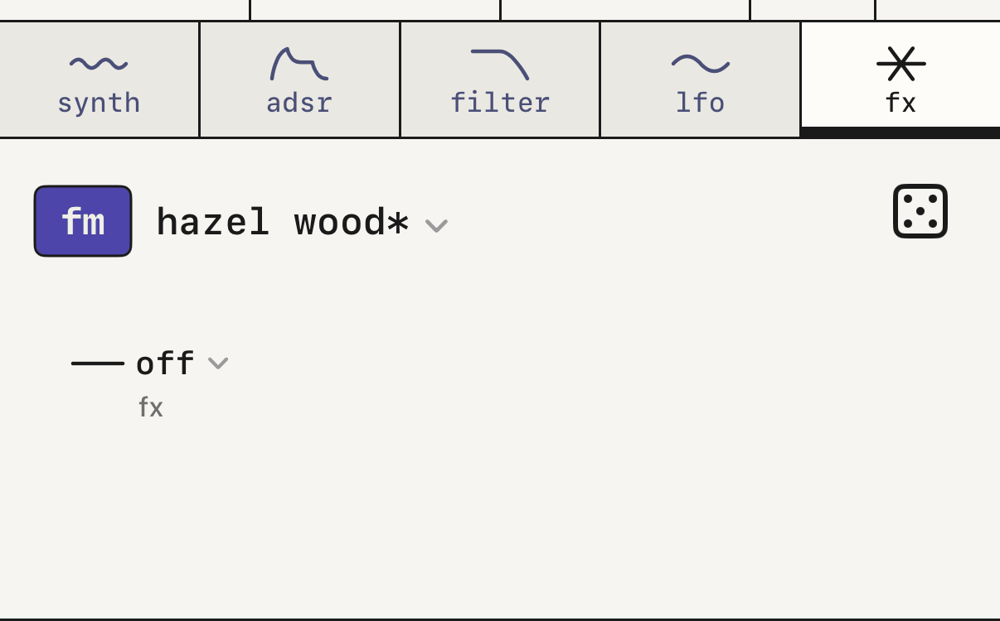
fx avec space chargé.Effets du mix
Les effets que vous chargez dans fx 1 et fx 2.
tapesat
saturation de bande, s’ajoute
drive- à quel point le signal pousse contre la bande, avec le volume compensé
tone- atténuation des aigus, de 200 Hz à 20 kHz
bias- asymétrie, ajoute des harmoniques pairs
age- de la bande neuve à la vieille cassette, avec du souffle puis du wow
delay
écho à bande, s’ajoute
time- de 30 à 750 ms. Quand vous le bougez, l’écho glisse
fbk- répétitions
tone- assombrit chaque répétition
wow- flottement du retard
reverb
huit lignes réinjectées, s’ajoute
decay- durée de la queue
tone- brillance de la salle
drip- scintillement de ressort
damp- comment les aigus s’éteignent dans la queue
crush
moins d’échantillonnage et moins de bits, remplace
rate- de 48 kHz à 1.5 kHz
bits- de 16 à 3
grit- des marches au bruit
tone- filtre des aigus
haze
filtre en mouvement, remplace
freq- coupure de départ, de 80 Hz à 8 kHz
move- à gauche c’est le signal qui le bouge, à droite un LFO
res- résonance, oscille près du maximum
shape- du passe-bas au passe-bande, puis au phaser
Avec free, le LFO va de 0.1 à 8 Hz. Avec sync, il suit le tempo.
wobble
flottement de bande, remplace
depth- à quel point la hauteur bouge
rate- de 0.1 à 8 Hz
shape- du sinus à la marche aléatoire
drop- chutes de niveau et d’aigus
shimmer
reverb avec octave, s’ajoute
shmr- quantité d’octave réinjectée
size- longueur de la queue
tone- du brillant au sombre
bloom- le temps que met le nuage à monter
En dessous, vous choisissez l’intervalle, de −12 à +12. D’usine, c’est +12.
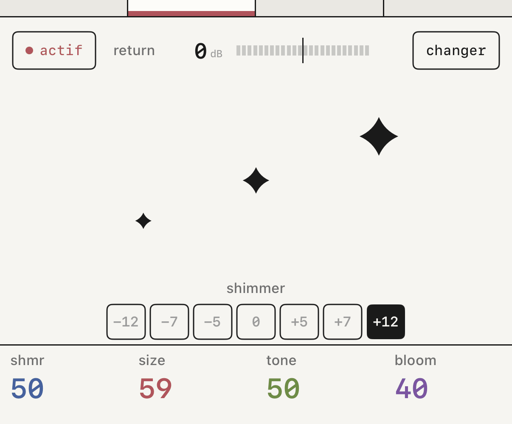
shimmer avec les puces d’intervalle.Réglages
La roue dentée de l’en-tête ouvre les réglages, en quatre onglets.
bande
pistes- nombre de pistes de la bande, de 4 à 6
tempo- à la molette ou en tapant le rythme
mesure- mesure de la bande
décompte- décompte avant l’enregistrement
métronome- active le clic
mode recajoutourempl.barre d’édition- quel geste l’ouvre
régions- comment les prises sont dessinées
synchro
midi- appareils,
apprendre,canal,seq,décalage sortie,sans filetpanique horloge midioff·sortie·entréelink- ouvre Ableton Link
application
modeenregistreurougrooveboxthèmeclair·sombre·autovélocité- à quel point la frappe compte quand vous jouez touches et pads, de 0 à 5
langue- quinze langues, change tout de suite
micro- état de l’autorisation
qualitéstudioenregistre en 24 bits etdémoen 16, qui prend moins de placestockage- la place qu’occupe TapeDesk
icône de l’app- cream · dark · olive · wine
à propos
aucune donnée collectée- renvoie à la politique de confidentialité
manuel- ouvre ce manuel
rate- pour noter l’app
assistance- pour nous écrire
En bas, il y a la version et les crédits des sons et de Plaits.
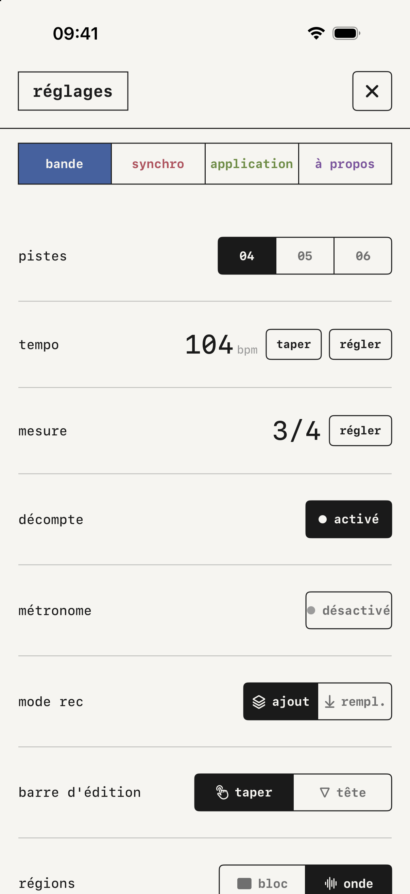
bande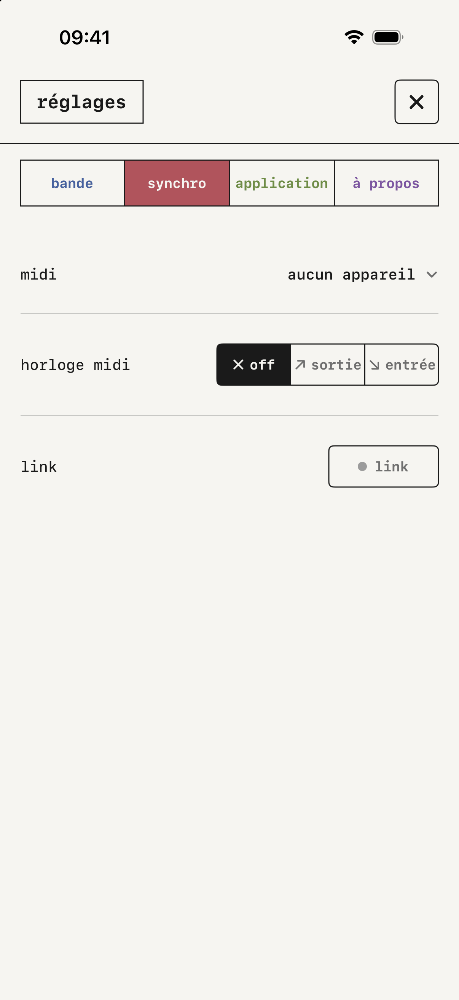
synchro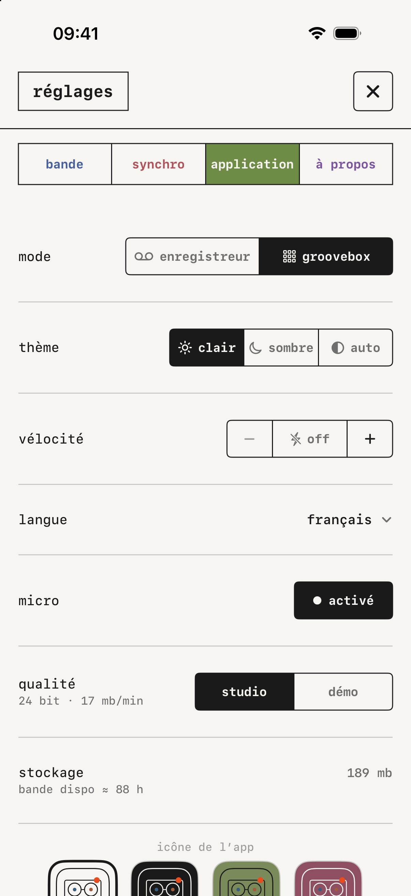
application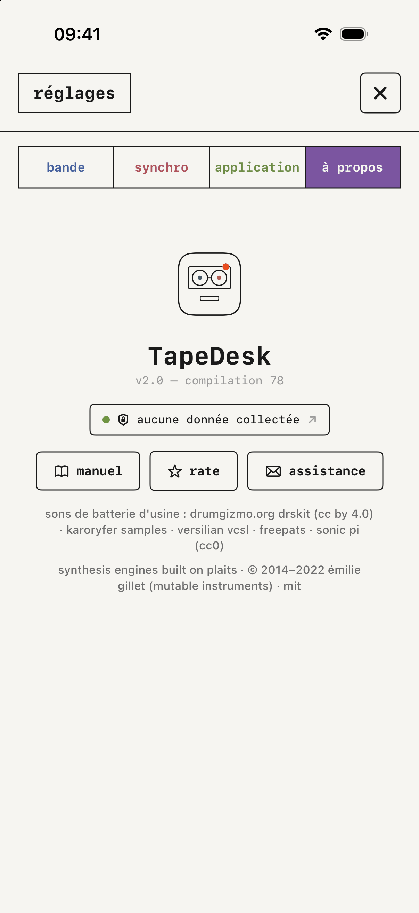
à proposIndex des termes
actif· effetsajout· armer et enregistrerannuler· pistesapprendre· midi learnarp· seqau· plugins d’autres appsbandes· vos bandeschanger· effetschop· kitchords· chordsdécompte· armer et enregistrerdirect· TapeDesk en plugindrive· tranches de consoledrop· la barre d’éditionéjecter· exporterenregistreur· les deux modeseq· eq mastereucalyptus· eucalyptusfx 1etfx 2· effetsgroovebox· les deux modeshorloge· TapeDesk en pluginhorloge midi· synchroniser le tempoimprimer· eucalyptusjoin←et→join· la barre d’éditionkeys· keyskit· kitlift· la barre d’éditionlink· synchroniser le tempoloop· boucle, looper en directmaster· exportermix· tranches de consolemode rec· armer et enregistrernorm· kitouvrir l’ui· plugins d’autres appsping· seqpistes· pistes, exporterplugins· plugins d’autres appsproject· vos bandesrec· armer et enregistrerrempl.· armer et enregistrerreport· réunir deux pistes en unereturn· effetsrev· la barre d’éditionrew· se déplacer sur la bandesafe· plusieurs sources à la foisseq· seq- seuil · une prise qui démarre toute seule
- son de chaque piste · le son de chaque piste
source· enregistrer le synthésource → piste· plusieurs sources à la foissources· plusieurs sources à la fois, TapeDesk en pluginspeed· vitessestart· votre première prisestep· seqstopdeux fois · armer et enregistrersynth· choisir un sonTapeDesk: Play· TapeDesk: PlayTapeDesk: Tape· TapeDesk en pluginundoetredo· la barre d’édition
Licences
Les sons d’usine de kit viennent de DrumGizmo.org DRSKit (CC BY 4.0), Karoryfer Samples, Versilian VCSL, FreePats et Sonic Pi (CC0).
Les onze moteurs de synthèse sont construits sur Plaits, d’Émilie Gillet (Mutable Instruments), sous licence MIT. Copyright 2014–2022 Émilie Gillet. La licence demande que son texte accompagne le programme, le voici donc.
Permission is hereby granted, free of charge, to any person obtaining a copy of this software and associated documentation files (the "Software"), to deal in the Software without restriction, including without limitation the rights to use, copy, modify, merge, publish, distribute, sublicense, and/or sell copies of the Software, and to permit persons to whom the Software is furnished to do so, subject to the following conditions:
The above copyright notice and this permission notice shall be included in all copies or substantial portions of the Software.
THE SOFTWARE IS PROVIDED "AS IS", WITHOUT WARRANTY OF ANY KIND, EXPRESS OR IMPLIED, INCLUDING BUT NOT LIMITED TO THE WARRANTIES OF MERCHANTABILITY, FITNESS FOR A PARTICULAR PURPOSE AND NONINFRINGEMENT. IN NO EVENT SHALL THE AUTHORS OR COPYRIGHT HOLDERS BE LIABLE FOR ANY CLAIM, DAMAGES OR OTHER LIABILITY, WHETHER IN AN ACTION OF CONTRACT, TORT OR OTHERWISE, ARISING FROM, OUT OF OR IN CONNECTION WITH THE SOFTWARE OR THE USE OR OTHER DEALINGS IN THE SOFTWARE.